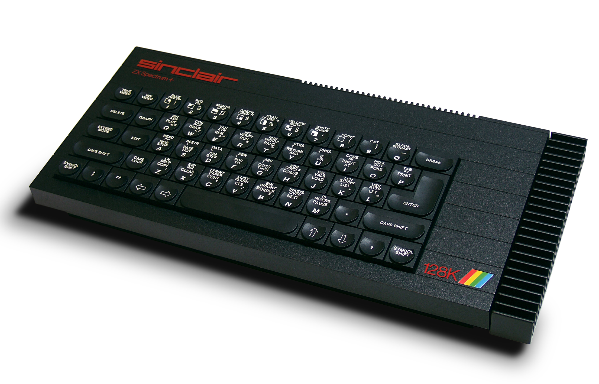

The ZX Spectrum, pronounced /zɛd ɛks/ in the UK, is an 8-bit home computer that was created and promoted by Sinclair Research. Recognized as one of the most significant computers in history and among the best-selling British computers, it achieved sales exceeding five million units. The device was launched in the United Kingdom on April 23, 1982, and subsequently made its way to various international markets, particularly in Europe, the United States, and Eastern Bloc nations in the years that followed.